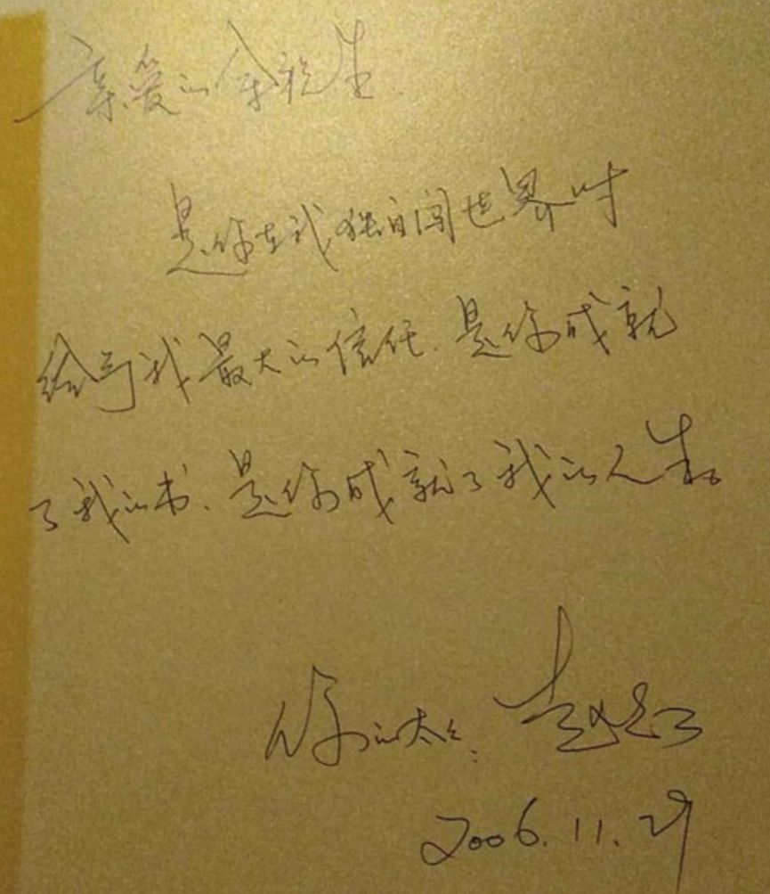
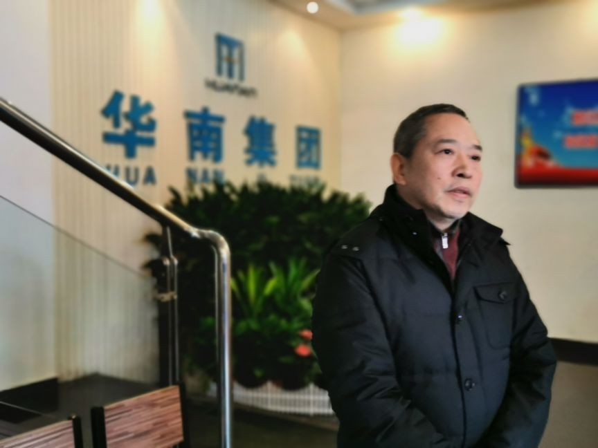

野味消费：病毒突变的“祸根”
原文链接 备份链接 SARS之后，我们以为人们对野味的消费会减少很多，没想到最近几年，这种需求又在不断增加，消费的种类也呈现不断扩大趋势。然而，从猎捕到运输、加工、售卖下的每个环节，也使得病毒在传播过程中不断发生变异。 记者 | 王珊 王 …
本报记者 郝成 张家振 王迎春 武汉报道
目前确诊2000多人，引发全国高度关注，导致武汉封城的新型冠状病毒，被专家指来自于武汉市华南海鲜批发市场（以下简称“华南海鲜市场”）。该市场内的野生动物，则可能是最初病毒的携带、传播者。
21天前，1月2日，《中国经营报》曾报道华南海鲜市场疑似存在野生动物。当地市场监管局在2019年9月25日发文中，曾透露有8家持有野生动物经营许可审批文件。
“实际上他有非法经营的野生动物，我们从非法经营野生动物的摊位，通过环境样本的检测，找到了病毒的基因组。”近日，国家卫健委高级别专家组成员高福，在电视上告诉公众。
华南海鲜市场，实际隶属于武汉华南置业集团有限公司（以下简称“华南集团”），其法定代表人为余甜，股东余其泽，系余甜的弟弟。余甜据传与官员之子结婚。其父亲余祝生被当地社会人士尊称为“大哥”。余祝生异常低调。人们更多知晓的，则是其前妻赵红，赵红曾在1999年至2006年之间管理过华南海鲜市场。
“余祝生长期前往澳门赌博，去年10月26日，和赵红到民政局办理了离婚。他们分居十几年了，赵红早就没有管理企业了。”1月26日，余祝生、赵红的亲属告诉《中国经营报》记者，余祝生在很多人看来，是一位“大哥”，但赵红曾斥其“德不配位，必有灾殃”。
疫情发生后，该市场在关闭后，还曾组织租户到现场退租，此举被网友批评为故意扩大疫情。1月1日，记者曾前往华南集团采访，但遇到当地宣传部人员阻拦。随后，当地一份新闻通稿，下发前也被要求撤销。
据中国疾控中心消息，最新检测结果证实，武汉华南海鲜市场存在大量新型冠状病毒。

“大哥”余祝生
“2019年10月26日，余祝生和赵红去民政局办的离婚证，但实际情况是，他们分居十几年了，赵红也没有管企业十几年了。他俩没有共同的孩子。”一位亲属透露，目前网络传播极广的赵红，确实是湖北省摄影家协会副主席，但她没有参与企业管理已经十多年。
该亲属曾多次与赵红长谈往事，也与余祝生相识25年，因此对华南海鲜市场背后的余祝生家族极为熟悉。亲属告诉记者，赵红早年曾学过企业管理，也因此，在1994年两人结婚后，从1999年到2006年之间，赵红曾管理过华南海鲜市场。
余祝生系1962年生人，出生在武汉一个城中村，是家中第八个孩子，上面有4个哥哥、3个姐姐，文化程度很低，小学未毕业，早年在建筑行业打拼。现在，社会上的人会叫余祝生一声“大哥”。其与赵红结婚前，与前妻育有余甜、余其泽姐弟俩。
该亲属认为，当时赵红管理期间，华南海鲜市场还是很不错的。“非典、禽流感时期，每天消毒，一起（传染）都没有发生，这个你可以找工商部门核实。但是大概是2006年前后，余祝生住到香格里拉不回家了。当时我们亲属劝赵红去接回来，赵红好像也没去接。”
网传赵红早年照片。 图片来自网络
该亲属称，在那之前，余祝生便经常前往澳门赌博，一年去几次，但后来变成了一个月去一次。赵红当时即对这种行为颇多怨言。但真正矛盾爆发，则是一次收购行为。
当时，武汉市一家大型棉纺厂出现危机，广东投资商要撤出，没人接盘。“市领导给赵红说，说你老公余祝生以前想过要这家企业，你们现在接一下，帮一下武汉，赵红就拿了几千万元去接，结果余祝生后来知道就很生气。”这位亲属回忆称，余祝生当时认为赵红太过高调，甚至怀疑赵红是不是和协会里的什么人联合起来，对企业进行夺权。

网传在一本赵红摄影集上，赵红曾向丈夫余祝生签字表示感谢。但亲属透露，彼时二人已经分居，且此后再未恢复关系。图片来自网络
赵红在接手棉纺厂后，曾一度被员工等逼得想要自杀。赵红曾告诉自己一位老师，“她说，老师，你再不来看看我，我可能就开车冲到长江里面去了。她说当时有员工拿着剪刀要捅她，银行还有一堆负债，她那个时候好艰难的”。
也是在此后，赵红的名字从企业消失，不再管理企业。“这次事情出来，也有很多人问赵红，实际她早就不管企业了，而且分居十几年，去年离婚的，两个人又没有共同的儿女，她和余祝生都没有联系了。”受访亲属称，但赵红早前未对家人透露离婚一事，认为50多岁的人，离婚丢人。
一个细节是，余祝生住到香格里拉大概5年后（2011年前后），某天夜里，忽然带人回家搬走家中大多数东西。“赵红第二天回家，还以为被抢劫了。问保姆，保姆不敢说，查了监控，才知道是余祝生干的，她当时就说余祝生这个人‘德不配位，必有灾殃’。”亲属称赵红学佛近20年，多数想的，是与人为善。
家族企业庞大
据湖北省摄影家协会官网，2019年12月18日，“视觉长江——庆祝新中国成立70周年湖北省摄影作品展”在北京、武汉举行。根据宣传画信息，该展出指导单位有湖北省委宣传部，主办单位则有湖北省发改委，协办单位则是武汉华南置业集团，即赵余家族核心企业。组委会委员中也出现了赵红的名字。
受访亲属称，实际上此次赞助，是赵红自掏腰包10万元支持的。“当时协会没什么经费，也管得严，赵红就自己掏了这个钱，给华南集团挂名，也是觉得这样做，能让社会对这个企业好感多一些。但实际上，协会让她找华南集团盖章，她没去的。应该也没有这个盖章的事情。”
该亲属认为，从这件事看，离婚后，赵红也是希望余祝生、华南集团在社会上有个好名声的。针对余祝生被网络上指责曾暴力拆迁、涉黑等问题，以及《中国经营报》记者早前采访了解到的一些情况，如余祝生与前妻所生女儿余甜嫁入官员家庭等，亲属表示，不便回应。
受访亲属也拒绝就余祝生做进一步评价，但其承认社会上是有人尊余祝生为大哥的。
赵红，是赵余家族中唯一高调的一位，其他人信息则鲜见于互联网。赵红在湖北、武汉摄影界颇具声名。摄影作品也在业内受到认可。公开信息显示，赵红 1965年生于湖北武汉，1998年毕业于中国社科院研究生院。武汉大学官网一篇文章称，赵红还在2006年进入该校，攻读新闻与传播学院艺术摄影专业。
据天眼查资料，上述余甜及其家人，实际控制企业多达50多家，除了大量企业在武汉注册外，在北京、上海、天津、西安也有注册企业。这些企业涉及房地产、建筑、物业、典当、传媒等多个领域。这些企业在年报中留下的联系人等信息，也高度一致。
其中，1994年注册成立的武汉市华南桩基有限公司，系余氏家族最早企业。多个企业年报中留下的联系方式等，也高度重合。但赵红、余祝生，在近年多次工商变更后，渐渐从企业董监高信息中淡出，余甜则开始显名。
此外，其直接、间接投资企业数量，则近百个。但一些企业，从公开信息检索来看，似乎并未在实际经营，留待进一步求证。记者曾逐一联系所有企业留下的手机号等，但均未获正面回应。记者也曾分别拨打赵红、余祝生手机号，并发送短信，但未获接听、回复。
野生动物之谜
疫病出现前，相关检查证实，至少有8家商户经营野生动物。但现在，相关部门否认曾向商户下发野生动物经营利用许可证。
上千家商户中，至少有8家，在经营野生动物。这可以从武汉市场监管局2019年9月25日发布的消息确定：“在华南海鲜批发市场内，市区两级执法人员对售卖虎斑蛙、蛇、刺猬等动物的近8家商户进行地毯式排查，逐一检查其野生动物经营许可审批文件、营业许可证，严禁其经营未获审批的野生动物”。

华南海鲜市场隶属于华南集团，该集团自疫情发生以来，未接受媒体采访。图为2020年1月1日的华南集团内部。 本报记者 张家振 摄
当天，武汉市场监管局联合林业、森林公安等部门，开展野生动物市场专项整治行动，在华南海鲜市场，未发现违法经营行为。彼时，华南海鲜市场负责人表示，将加大对商户进货索证索票的检查力度，一旦发现商家存在违法违规经营行为，将第一时间向执法部门报告，并清理出市场。
“西区就有十几家贩售野味的商户，售卖的野生动物包括野鸭、蛇、野兔等。那些商铺所处的位置都很偏僻，卖的东西有些我都不认得，每天去买的人也不少。”近日，有来自华南海鲜市场的住院业主及其亲属接受《中国经营报》记者采访时称，该市场分东西两区，仅西区就有十几家商户经营野生动物。

2020年1月1日，华南海鲜批发市场关闭后，相关工作人员正在采样检验。 本报记者 张家振 摄
目前专家认为，新冠肺炎病毒来自野生动物。2013年，在SARS过后十年时，研究表明SARS病毒传播源头是中华菊头蝠。2020年1月23日，中科院武汉病毒研究所石正丽团队发表文章报道了武汉新型冠状病毒2019-nCoV，指出该病毒与一种蝙蝠中的冠状病毒的序列一致性高达96%。
学界认为，蝙蝠是狂犬病病毒、尼帕病毒、汉塔病毒等众多动物源病毒的重要宿主，而中华菊头蝠被东南亚一带作为食物，中药“夜明砂”即由蝙蝠的粪便制成。我国不少饭店提供蝙蝠煲汤等菜品，专家认为，其宰杀、加工等环节，极易发生病毒传染。
另有研究标明，冠状病毒在蝙蝠和骆驼等动物中极为常见，但只在极少情况下病毒才会发生变异传染给人类。世卫组织对2012年出现的中东呼吸综合征冠状病毒（Middle East Respiratory Syndrome，MERS）的调查显示，该病毒可能源自蝙蝠，先传给骆驼，再由骆驼传给人类。
行政许可潜规则

1月1日，记者前往华南集团采访时，有当地宣传部人员阻拦。 本报记者 张家振 摄
此外，记者从大量论文中发现，自SARS发生17年来，始终有专家在呼吁，要求公众慎重接触野生动物，因野生动物本身所携带的病毒等较多，且不少并不为学界所掌握。我国《野生动物保护法》规定，出售、利用非国家重点保护野生动物的，应当提供狩猎、进出口等合法来源证明。
依据法规，对于野生动物经营，除了需要获得相应行政许可外（多在林业主管部门），还需要对获得的野生动物进行报批、检疫等（这一环节涉及市场监管、检疫部门）。1月22日，财联社采访武汉市园林和林业局相关负责人时，其称未向华南海鲜市场颁发野生动物经营利用许可证。
1月26日，《中国经营报》记者联系到武汉市园林和林业局，其值班人员称，印象中，在前几年的简政放权改革中，涉及野生动物经营许可，已经下放到区，但至于下放前他们是否有对华南海鲜市场商户进行审批，他们表示需要进一步了解。对于财联社早前报道，其称并不准确。
江汉区行政审批中心值班人员向记者透露，该中心审批多为材料接收，接收材料后，则分送具体业务单位，对于野生动物经营审批，她并不具体了解。江汉区园林局一位科长则对记者表示，该局从未有过该项审批权限。
“有一种情况是，经营许可证下发同时，主管部门会开出一张处罚或作废许可证的通知，但不填写时间。什么意思呢？为的就是一旦出事，（经营业主）你自己填上时间，这个时间要早于出事时间，这样主管部门就免除责任了。这个情况过去是普遍存在的潜规则。”近日，记者采访西北某地市林业主管部门退休官员时了解到，野生动物经营除了由林业部门出具许可证外，日常经营活动，则需要市场监管部门、检疫部门等多部门监管。
据新华社2015年9月报道，湖北丹江口市林业系统腐败窝案，源于该局下设管理站副站长张正学。该地一名落网后的普通干部感叹：“原以为是冷衙门，没想到也能贪这么多钱！”
据央视报道，2018年，江西省森林公安局公布的一起贩卖野生动物案中，涉案动物1.7万余只，销售网络覆盖全国15个省份。经专案组透露，有不少公职人员参与贩卖。有野生动物保护管理部门工作人员，为不法分子非法开具运输证明文件，充当保护伞，为犯罪活动提供便利。
2015年6月，《湖北日报》曾报道，武汉市工商行政管理局原党组成员、总经济师周展洪涉嫌滥用职权罪、受贿罪被逮捕。但此后再未见审判信息。
（编辑：孟庆伟 校对：彭玉凤）

推荐阅读
点击大图 | 物资驰援武汉之困：有钱找不到人和车

点击大图 | 新型肺炎毒种首次分离 30种潜力药被发现

原文链接 备份链接 SARS之后，我们以为人们对野味的消费会减少很多，没想到最近几年，这种需求又在不断增加，消费的种类也呈现不断扩大趋势。然而，从猎捕到运输、加工、售卖下的每个环节，也使得病毒在传播过程中不断发生变异。 记者 | 王珊 王 …
原文链接 备份链接 守家就是守城——武汉包子姐的除夕 2020-01-25 21:10 作者：周远征 来源：中国经营网 本报记者 周远征 重庆报道 “不管你在不在武汉，愿我们的心意在一起，大家一起保护自己，支持武汉，愿新的一年平安顺遂，无 …
原文链接 备份链接 “华南海鲜批发市场西区有十几家贩卖野味的商户”|对话武汉肺炎当事人 2020-01-22 20:16 作者：张家振 陈婷 来源：中国经营网 本报记者 张家振 陈婷 武汉、北京报道 “新型冠状病毒的来源是武汉一家海鲜市场 …
原文链接 备份链接 发热门诊排起长龙的就诊队伍似乎在宣告，这座城市正面临一次巨大的挑战。 全文4742字，阅读约需9分钟 ▲湖北各地出现口罩防护服等防疫物资短缺 拟请求国家支援。新京报我们视频出品（ID：wevideo） 距离除夕还有3 …
原文链接 备份链接 1月20日官方公布的感染武汉新型冠状病毒患者激增之前，武汉街头看起来和平时没多少不同。从1月20日开始，戴口罩的人突然多了起来。但其实这场病毒的袭击从大约一个月前就开始了，直到今天才引起更大范围的注意。 记者 | …